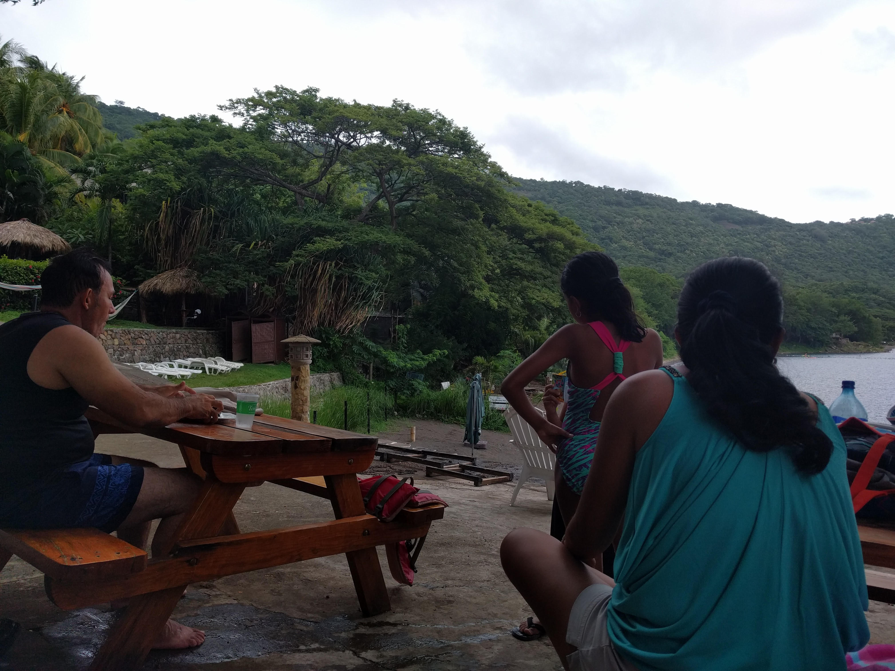
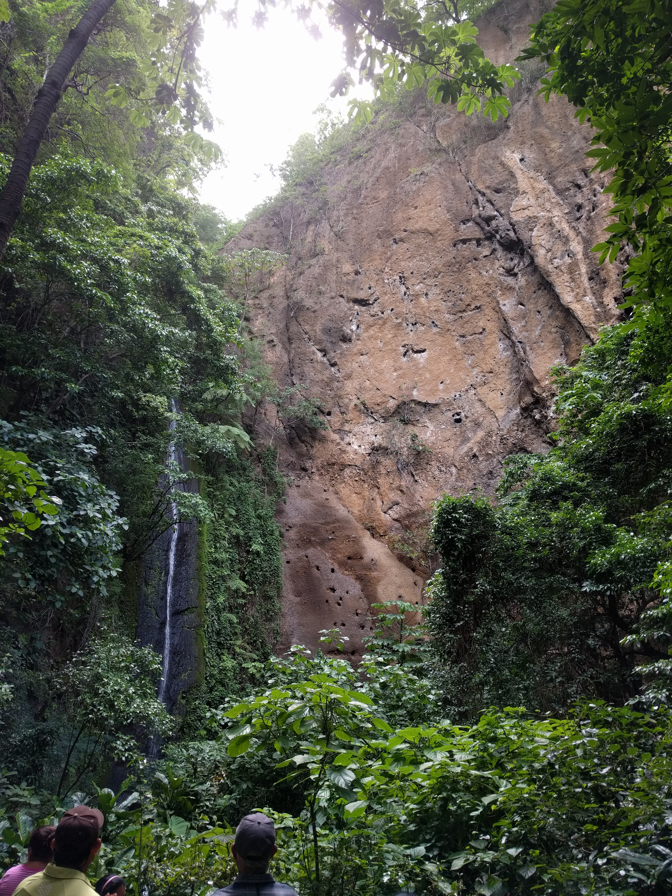
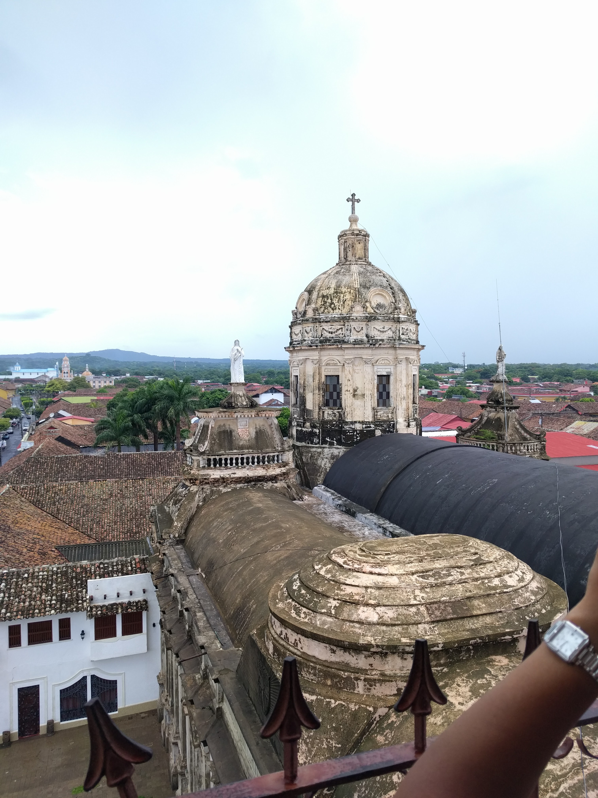
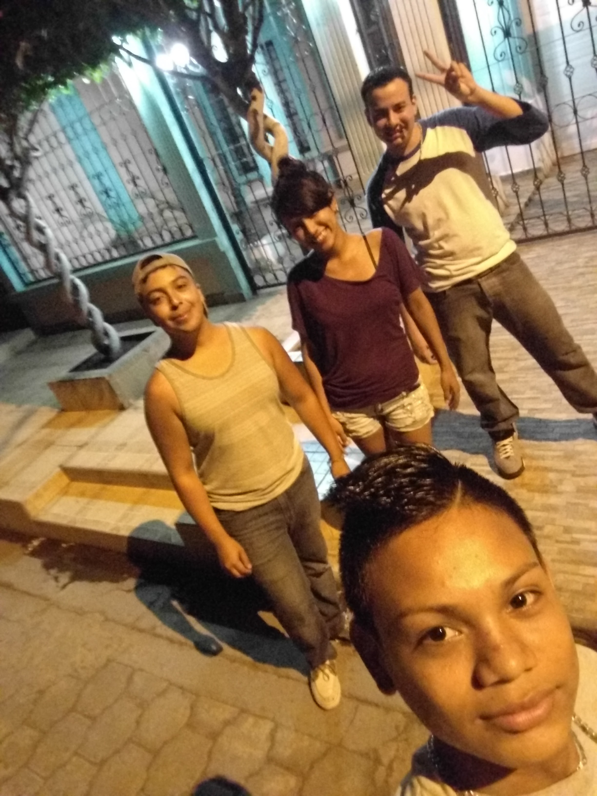

Places Visited
Though I've visited many times before, there are always new places to explore when I go. This time around I went to a few places. Here is a list:
- Catarina
- Resort/ Day-Relaxation Spot where you can relax in cabanas on top of a hill where you can oversee a wide view of the ocean underneath surrounded by other neighboring resorts. Here you can relax in big hammocks and take a dive in the waters, where you have diving spots.
- Chocoyero
- Nice tour on the different bird species native to Nicaragua followed up by a hike around the territory, which gives you an excellent view of the surorunding mountains and greenlife, as well as the animal inhabitants.
- Granada
- Although I've visited before, I had never really taken the time to do the historical city justice. This city is surorunded by old-Spanish influenced monuments, where you can take tours of. This followed up with the always live and spirited Central Park plaza.



Activities
Although I have come here before to mostly spend it with family and to sightsee, I have never really indulged in the activities that native Nicaraguans take part of. On this trip I decided to walk about and visit the city's parks, where most of the city dwellers go to at night.
Alongside my cousins, I also went to experience the nightlife, by going out to the clubs and getting some drinks. To my welcomed surprise, one of the clubs I went to actually give you a complimentary drink as you enter the club. Also, while the atmosphere is clublike, some of the clubs did give a sort of barlike feel to them, which was a plus for me.
Friends
This really touches home with me, because throughout the years, no matter the distance, or time in between visits, I can always come back and expect to leave things where I left off and resume really strong connections with people that I have met.
